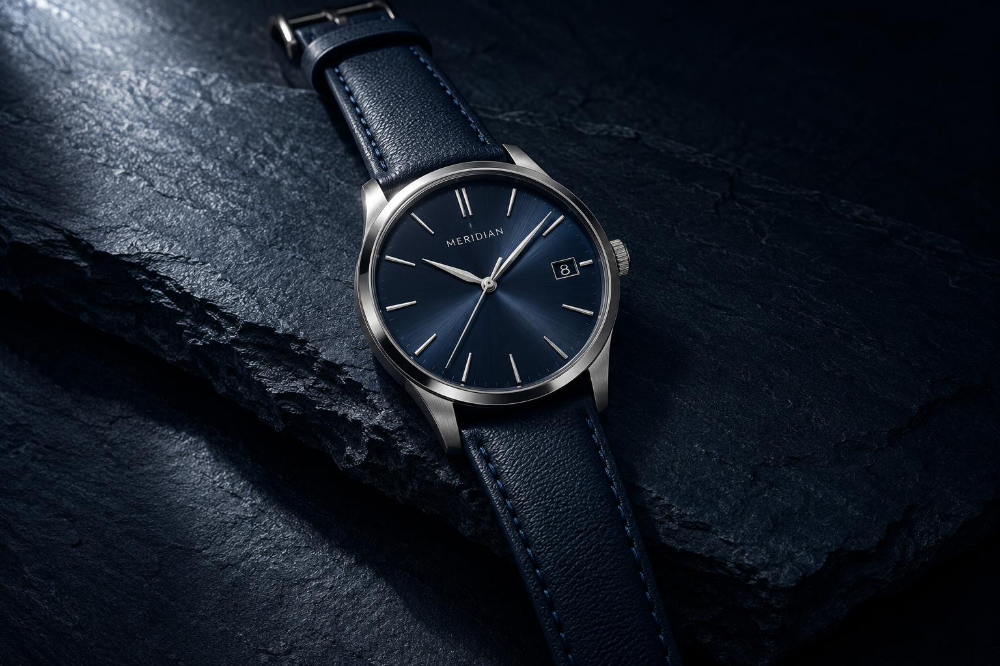
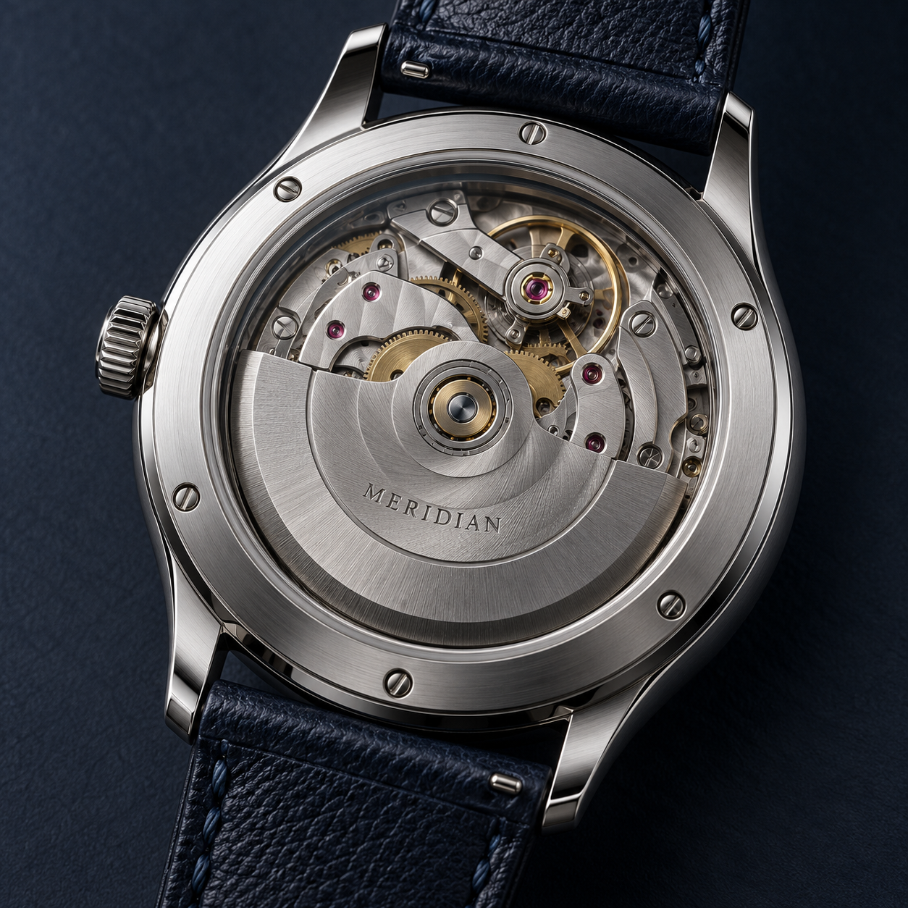

ORIGIN 01
↗自動上鍊 · 40 MM · 深海藍
MECHANICAL BY NATURE純粹機械比例之美日常相伴
01 / SELECTED TIMEPIECES
時間的不同表情

02 / INSIDE THE MOVEMENT
看不見的細節，
決定看得見的時間。
從錶盤的留白，到橋板的紋理，我們在意每一個構件之間的關係。翻轉腕錶，讓機械運轉的節奏成為日常的一部分。
01
走進 MERIDIAN ↗機械的溫度
細看齒輪之間的秩序，感受上鍊與佩戴的連結。
03 / THE COLLECTIONS
找到你的時間座標
三個系列，三種與時間相處的方式。
ORIGIN
回到純粹 · 日常正裝探索系列 ↗02FORM
留白之間 · 經典比例探索系列 ↗03FIELD
走出日常 · 自由步調探索系列 ↗A MOMENT, MADE YOURS.